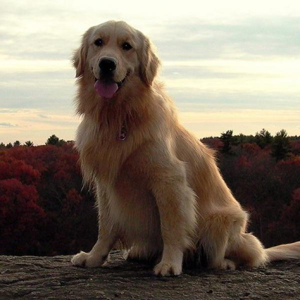
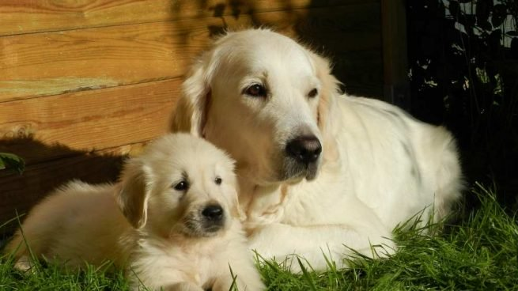

Esta cara que inspira confianza, serenidad y simpatía ha llevado a muchos publicitarios a usar el Golden Retriever en sus anuncios. De origen cazador, el Golden se ha convertido en perro de compañía y ha llegado a ser una de las razas más populares, siendo usada también como perro lazarillo o para detectar drogas y explosivos. Aunque el Golden Retriever se adapta perfectamente a la vida familiar, le encanta correr y es imprescindible sacarlo a pasear a diario. Necesita estar activo y ocupado.

El Golden Retriever se fue utilizando durante el siglo XIX como perro cobrador de caza. Los criadores se fijaron en él y después de muchos cruces, la raza tal como hoy la conocemos se estableció hacia 1884. A pesar de ser un cazador, la elegancia de este perro hizo que pronto se adoptase como perro de compañía.

- Altura a la cruz: de 56 a 61 cm en los machos y de 51 a 56 cm en las hembras
- Peso: de 29 a 31,5 kg en el macho
- Capa: oro o crema
- Promedio de vida: de doce a catorce años
- Carácter: dulce, muy afectuoso, muy receptivo al adiestramiento
- Relación con los niños: excelente
- Aptitudes: encuentra y cobra la pieza en la tierra y en el agua, perro de compañía, perro lazarillo, perro de salvamento y perro de droga
- Necesidades del espacio: preferible jardín
- Alimentación del Golden Retriever: unos 520 g. diarios de alimento completo seco
- Arreglo: reducidos, un buen cepillado diario
- Coste mantenimiento: bastante importante